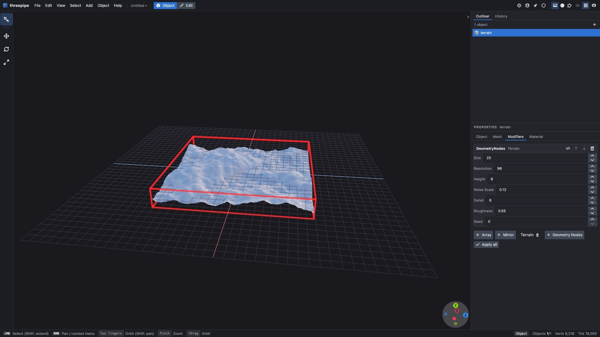
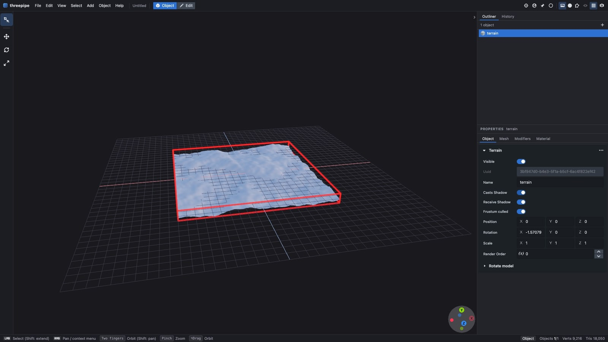
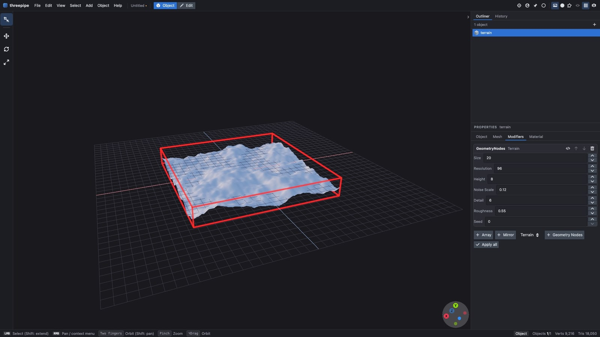

Geometry nodes, edited live
Blender 5.2.2 geometry-nodes groups evaluated in TypeScript on the mesh kernel, as modifiers in the threepipe modelling editor. Buildify 1.0's building generator and Blender Studio's flower field come from their .blend files through the blendAsset command (node groups, inputs and the objects they read - nothing Blender evaluated); the terrain is a group written in the TypeScript DSL. Each is edited twice: in Properties > Modifiers with the mouse and keyboard, and through the modifier update command an agent sends - every edit one undo step, re-running only what it reaches.

The film
node demos/geometry-nodes/record.mjs (see direction.md).1:23 · 1920×1080 · 30 fps · H.264, faststart · rendered frame by frame on ANGLE (Apple, ANGLE Metal Renderer: Apple Paravirtual device, Unspecified Version)
Metrics
Key steps




Checks
| asset | load ms | panel edit | updates (ms) | evaluated | drawn |
|---|---|---|---|---|---|
| buildify | 542 | Max number of floors = 12: 30 ms | Input_6=8,Input_7=12: 27; Input_6=4,Input_7=6: 19; Input_3=4: 17; Input_3=3: 21 | 10 verts, 4 faces | 234 draws, 20 instanced |
| flowers | 1398 | Flower Density = 0.4: 603 ms | Input_17=3: 581; Input_17=0: 511; Input_5=2: 374; Input_5=3: 518 | 4,225 verts, 4,096 faces | 122816 draws, 92 instanced |
| terrain | 348 | Height = 8: 328 ms | Resolution=140: 646; Resolution=96: 320; Seed=12: 315; Seed=0: 305 | 9,216 verts, 9,025 faces | mesh |
How it was made
record.mjs opens examples/procedural-editor-assets once per asset on the GPU VM, clicks the Modifiers tab, types the new value into the field and presses Enter (real Playwright input), waits for the object's evaluated mesh to change and records that time, then sends four timed modifier update commands. demos/shared/film.mjs renders and captures every frame, so an evaluation that takes seconds shows as its number on screen rather than a frozen picture. Times are wall time in the page on the VM (6 cores, Apple Paravirtual GPU).
Re-run: put the bundles in tmp/bundles/ (plugins/procedural/tests/fixtures/ASSETS.md), node demos/geometry-nodes/record.mjs, pull tmp/demo/geometry-nodes/film/ to demos/geometry-nodes/film/, node demos/geometry-nodes/make-report.mjs. The track-2 acceptance record (scripts/procedural-acceptance-video.mjs) is the same run in real time.
The film ran 15 commands (0 failed), 4615.2 ms of command time in the page on the GPU. By operation:
The first commands of the transcript (transcript.json has all of them, with results):
{"op":"modifier","object":"building_base","index":0,"via":"Properties > Modifiers, typed","field":"Max number of floors","value":12}
{"op":"modifier","object":"building_base","index":0,"update":{"inputs":{"Input_6":8,"Input_7":12}}}
{"op":"modifier","object":"building_base","index":0,"update":{"inputs":{"Input_6":4,"Input_7":6}}}
{"op":"modifier","object":"building_base","index":0,"update":{"inputs":{"Input_3":4}}}
{"op":"modifier","object":"building_base","index":0,"update":{"inputs":{"Input_3":3}}}
{"op":"modifier","object":"EN-ground_plane_NEW","index":0,"via":"Properties > Modifiers, typed","field":"Flower Density","value":0.4}
{"op":"modifier","object":"EN-ground_plane_NEW","index":0,"update":{"inputs":{"Input_17":3}}}
{"op":"modifier","object":"EN-ground_plane_NEW","index":0,"update":{"inputs":{"Input_17":0}}}
{"op":"modifier","object":"EN-ground_plane_NEW","index":0,"update":{"inputs":{"Input_5":2}}}
{"op":"modifier","object":"EN-ground_plane_NEW","index":0,"update":{"inputs":{"Input_5":3}}}
{"op":"modifier","object":"terrain","index":0,"via":"Properties > Modifiers, typed","field":"Height","value":8}
{"op":"modifier","object":"terrain","index":0,"update":{"inputs":{"Resolution":140}}}
{"op":"modifier","object":"terrain","index":0,"update":{"inputs":{"Resolution":96}}}
{"op":"modifier","object":"terrain","index":0,"update":{"inputs":{"Seed":12}}}
{"op":"modifier","object":"terrain","index":0,"update":{"inputs":{"Seed":0}}}
…
What still looks weak
- Buildify and the flower field are third-party assets: their renders and this film cannot be committed or published until their use in launch material is decided.
- The editor viewport lighting is the editor default; the flower field's grass reads as flat colour at 1080p.
Credits
Buildify 1.0 by Pavel Oliva (free for commercial use, not for resale of the graph). flower_scattering.blend by Simon Thommes and Andy Goralczyk, Blender Studio (CC0). See plugins/procedural/tests/fixtures/ASSETS.md.